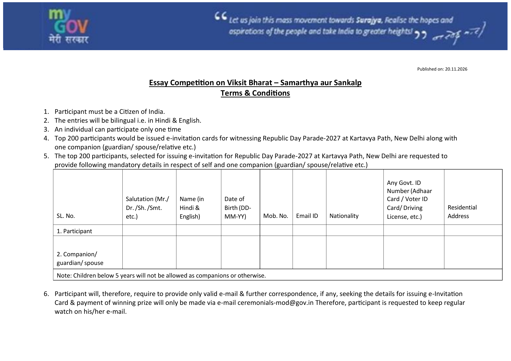
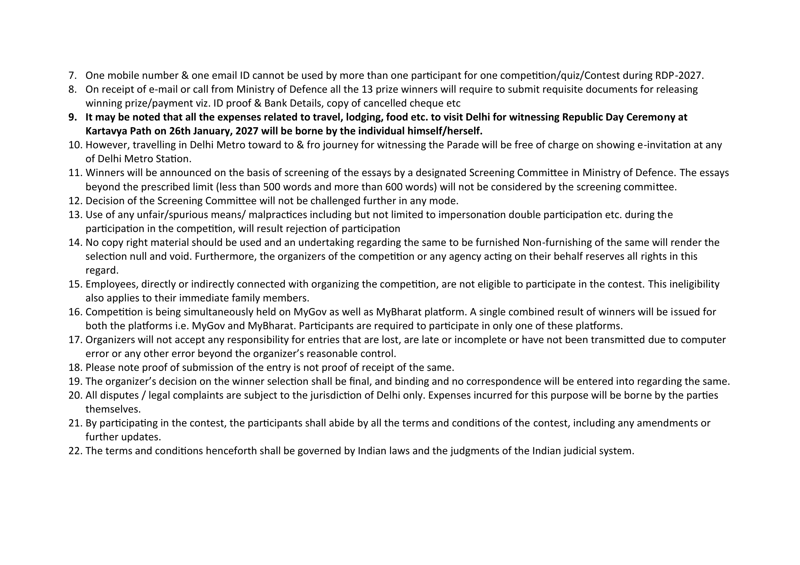
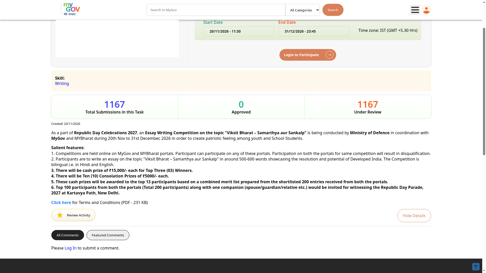
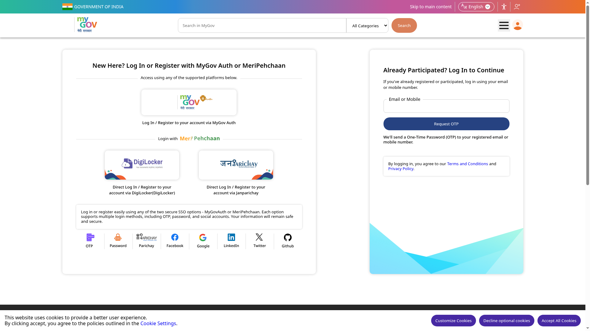

Viksit Bharat essay competition: Rs15,000 each for the top three winners
Write a 500-600 word essay in Hindi or English on Viksit Bharat - Samarthya aur Sankalp. The Ministry of Defence is holding this online competition with MyGov and MYBharat as part of Republic Day Celebrations 2027. MyGov lists the deadline as 31 December 2026, 11:45 PM IST.
Who can enter?
- The official terms require Indian citizenship.
- An individual may participate only once.
- No participant age cutoff is stated in the published terms checked here. Do not confuse the rule excluding children below five from attending the parade with an essay-entry age condition.
- Employees directly or indirectly connected with organising the competition, and their immediate family members, cannot enter.
- One email address and one mobile number cannot be used by more than one participant for the same competition.

Official terms page 1: citizenship, single participation and parade invitation requirements. PDF rendered at 2300 pixels wide; emblem masked, not a browser screenshot. Checked 24 November 2026. Tap to enlarge.
Essay topic and length
The exact topic is Viksit Bharat - Samarthya aur Sankalp, about the resolution and potential of a developed India. Choose Hindi or English. While the task description says “around” 500-600 words, clause 11 is strict: essays below 500 words or above 600 words will not be considered. Stay within 500-600 words inclusive.
Write your own essay. The terms reject unfair practices, impersonation and double participation. They require a copyright undertaking, and non-submission of that undertaking makes selection invalid. Do not copy material from other essays. The checked rules do not set out a separate AI-use policy; this guide does not treat that silence as permission to submit generated writing.
Prizes and Republic Day invitations
- Top three: Rs15,000 each.
- Ten consolation prizes: Rs5,000 each.
- The 13 prize winners come from one combined merit list across both portals, not a separate prize pool on each portal.
- The task page says the top 100 on each portal, 200 in total, will be invited with one companion to watch the Republic Day Parade 2027 at Kartavya Path, New Delhi. The terms describe the top 200 receiving e-invitations.
This is not an all-expenses-paid Delhi trip. Travel, accommodation and food are paid by the selected participant. The terms separately allow free Delhi Metro travel to and from the parade on showing the e-invitation. Children below five cannot attend as companions or otherwise. Invitation is not the same as winning a cash prize.

Official terms page 2: self-funded Delhi visit, strict word count, exclusions and single-platform rule. Direct PDF render, not a browser screenshot. Checked 24 November 2026. Tap to enlarge.
How to participate, step by step
- Open the official MyGov essay task. Check the title and closing date, then open Show Details and download the linked Terms and Conditions.
- Read the citizenship, one-entry, copyright and word-count rules. Draft your essay in Hindi or English and check that it has 500-600 words.
- Choose one portal only. If using MyGov, select Login to Participate. The public login page offers MyGov Auth and MeriPehchaan options; existing participants also see an email/mobile OTP route.

MyGov expanded task details: deadline, essay length, prizes and terms link. Full-HD 1920 × 1080 desktop capture. Header emblem and promotional banner hidden; other content unchanged. Checked 24 November 2026. Tap to enlarge.

Public MyGov login options, blank and without personal data. Full-HD 1920 × 1080 desktop capture. Emblems masked; other content unchanged. Checked 24 November 2026. Tap to enlarge.
- Sign in using your own account and follow the current entry form. We did not sign in, so this guide does not invent file formats, upload-size limits, attachment fields or a final submission-button label. Check these on the live form before preparing an upload.
- Complete every required field and copyright undertaking shown by the official form. Recheck the essay, contact details and one-portal restriction before submitting.
- Save any acknowledgement and check your entry status. The terms warn that proof of sending is not proof of receipt. Submit before the final evening rather than relying on a last-minute upload.
If you are shortlisted
Keep a valid email address active. The terms identify ceremonials-mod@gov.in for correspondence about e-invitations and prize payment. Shortlisted invitees must give identity and contact information for themselves and their companion; prize winners may need ID proof, bank details and a cancelled cheque copy. Do not publish these documents in comments or send them to AiCoN. Verify unexpected payment or identity requests through the official task and terms before replying.
English and Malayalam video guides
No reliable current-cycle English or Malayalam application video was verified in this check. Use the official task and the two-page terms above. Avoid copying a sample essay, including one in a video.
മലയാളത്തിൽ പ്രധാന വിവരങ്ങൾ
ഇന്ത്യൻ പൗരന്മാർക്കുള്ള ഉപന്യാസ മത്സരമാണ്. വിഷയം: Viksit Bharat - Samarthya aur Sankalp. ഹിന്ദിയിലോ ഇംഗ്ലീഷിലോ 500 മുതൽ 600 വരെ വാക്കുകൾ എഴുതണം. മലയാളത്തിലുള്ള ഉപന്യാസം സ്വീകരിക്കുമെന്ന് അറിയിപ്പിൽ പറയുന്നില്ല. അവസാന തീയതി 2026 ഡിസംബർ 31 രാത്രി 11:45 IST.
ആദ്യ മൂന്ന് സ്ഥാനക്കാർക്ക് 15,000 രൂപ വീതവും പത്ത് പ്രോത്സാഹന സമ്മാനങ്ങൾക്ക് 5,000 രൂപ വീതവുമാണ്. MyGov അല്ലെങ്കിൽ MYBharat, ഏതെങ്കിലും ഒരു പോർട്ടലിൽ മാത്രം പങ്കെടുക്കുക. രണ്ടിലും അപേക്ഷിച്ചാൽ അയോഗ്യത വരും. റിപ്പബ്ലിക് ദിന പരേഡ് കാണാനുള്ള ക്ഷണം ലഭിച്ചാലും ഡൽഹിയിലേക്കുള്ള യാത്ര, താമസം, ഭക്ഷണം എന്നിവ സ്വന്തം ചെലവിലാണ്. ഞങ്ങൾ ലോഗിൻ ചെയ്യുകയോ അപേക്ഷ സമർപ്പിക്കുകയോ ചെയ്തിട്ടില്ല.
Sources and verification limits
- MyGov task: organiser, topic, dates, prizes, invitation split and one-platform warning.
- Official terms, published 20 November 2026: both pages read and visually inspected. Eligibility, strict word count, cost conditions and exclusions.
- Public login route: reached from the task; no login or OTP request made.
Four useful official evidence images are included: two desktop captures at 1920 × 1080 and two direct PDF renders at 2300 × 1627. National emblems are masked and the promotional banner is hidden in the task capture. This is not a screenshot of the event poster. The cover uses the emblem-free part of official MyGov lettering. We did not test the authenticated entry form or submit an essay. The checked public terms do not state an entry fee; no payment screen was reached.